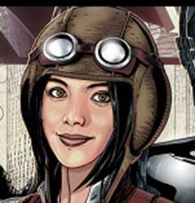
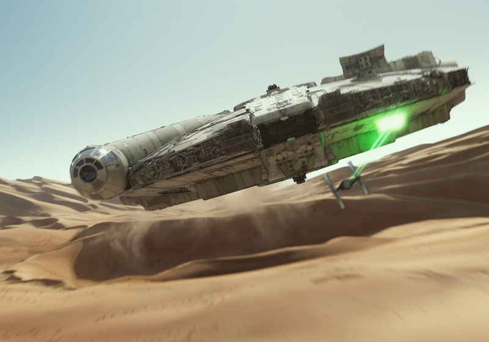

Star Wars stuff
The forest moon of Endor, 4 ABY
This is a Rebel that surrendered to us. Although he denies it, I believe there may be more of them, and I request permission to conduct a further search of the area. He was armed only with this. Good work, Commander. Leave us. Conduct your search and bring his companions to me. Yes, my Lord. The Emperor has been expecting you. I know, father. So, you have accepted the truth. I've accepted the truth that you were once Anakin Skywalker, my father. That name no longer has any meaning for me.
I have a really bad feeling about this. What did he say? I'm rather embarrassed, General Solo, but it appears you are to be the main course at a banquet in my honor. Leia! Oh! Your Royal Highness. But these are my friends. Threepio, tell them they must be set free. Somehow, I got the feeling that didn't help us very much. Threepio, tell them if they don't do as you wish, you'll become angry and use your magic. But Master Luke, what magic? I couldn't possibly -- Just tell them. You see, Master Luke they didn't believe me. Just as I said they wouldn't.
The Force Awakens was a great movie
Cut it out! I'm not gonna hurt you. Well, looks like I'm stuck here. Trouble is, I don't know where here Well, maybe you can help me. Come on, sit down. I promise I won't hurt you. Now come here. All right. You want something to eat? That's right. Come on. Hmmm? Look, it's a hat. It's not gonna hurt you. Look. You're a jittery little thing, aren't you? What is it? Freeze! Come on, get up! Go get your ride and take her back to base. Yes, sir. Come on, let's get outta here.
No! Luke, run away, far away. If he can feel your presence, then leave this place. I wish I could go with you. No, you don't. You've always been strong. But, why must you confront him? Because...there is good in him. I've felt it. He won't turn me over to the Emperor. I can save him. I can turn him back to the good side. I have to try.
We're coming! Come on! Come on! Oh, Artoo, hurry! My goodness! Artoo, why did you have to be so brave? Well, I suppose I could hotwire this thing. I'll cover you.
There is no Death Star. The Senate has been informed that Jedha was destroyed in a mining disaster.